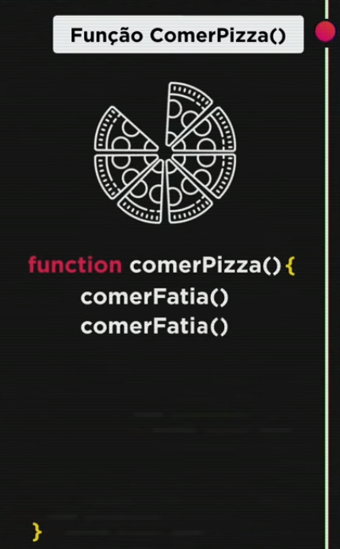
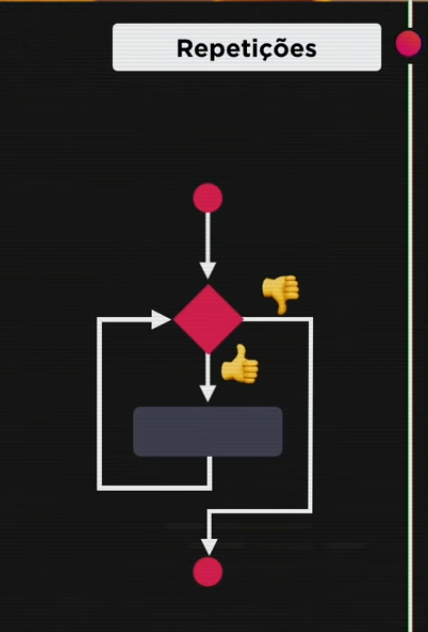
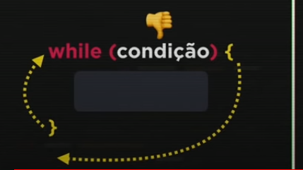
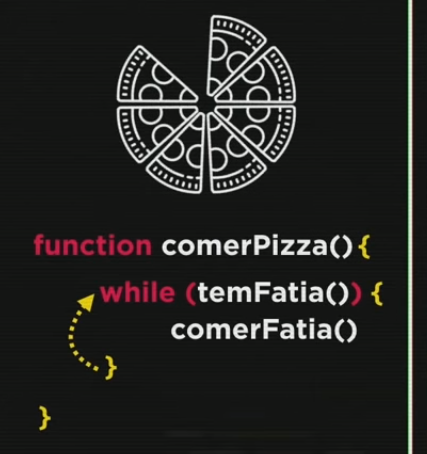
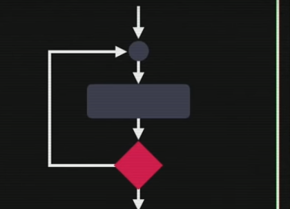
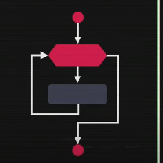
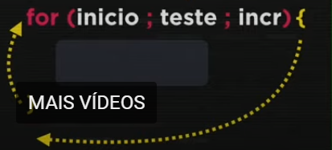

Aula 13 e 14
Repetições
No JavaScript, temos vários tipos de repetições: Repetições com teste no início (while), repetições com teste no final (do...while) e repetições com controle (for). As estruturas de repetição podem ser chamadas de laços ou iterações.
Introdução
Os laços de repetição server para evitar repetições de código, como por exemplo:
A estrutura de repetição funciona em formato de looping, que é repetido a cada teste no momento em que o fluxo retorna ao início da estrutura. Se o testes for verdadeiro, o que estpa dentro do laço é executado. Ao contrário, o fluxo é desviado para fora, seguindo a aplicação.
Estrutura de repetição com teste lógico no início
Para montar a estrutura, utilizamos a palavra reservada while, seguida de uma condição entre () e o bloco de código entre {};
Desse modo, resolvemos o problema de repetições de comandos e otimização de código
Estrutura de repetição com teste lógico no final
Temos também a opção de fazer o teste lógico no final do bloc de código.
Para montar a estrutura, utilizamos a palavra reservada do, seguida do bloco de código entre {}. No final, temos o while e a condição entre ().

Estrutura de repetição com variável de controle
Nessa estrutura, o teste lógico também é feito no início da estrutura, porém nele ocorrem três etapas (inicialização, condição e incremento). Ou seja, o incremento ocorre automaticamente na variável contadora
Para montar essa estrutura, utilizamos a palavra reservada for, seguida das três etapas da estrutura entre parênteses e separadas por ponto e vírgula (;). Após, temos o bloco de código entre chaves ({}).
